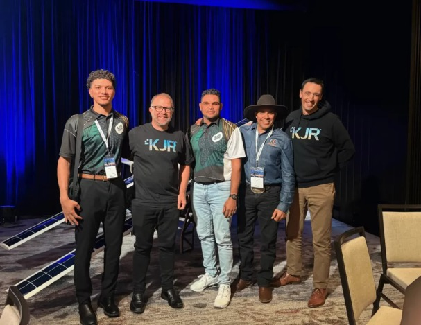

AI First Nations is an Indigenous-led environmental technology organisation. We exist to prove that Traditional Knowledge and cutting-edge technology are not opposites — they are partners in caring for Country.
Founded by John Fejo in Innisfail, QLD, AI First Nations grew from a simple conviction: that Indigenous land managers, equipped with the right technology, can be the most effective stewards of Country in the world.
With over a decade as Head Ranger Coordinator across North Queensland and the Northern Territory, John's work now combines CASA-accredited drone operations with an AI mangrove classification system developed in partnership with RMIT University — achieving 97% verified accuracy.
We do not layer technology over Traditional Knowledge. We embed Traditional Knowledge inside the technology. Every flight plan, every model, every report is shaped by the cultural knowledge, priorities and permissions of the Traditional Owners whose Country we work on.
